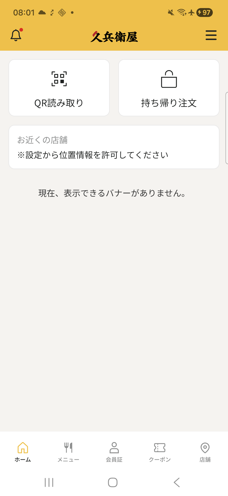
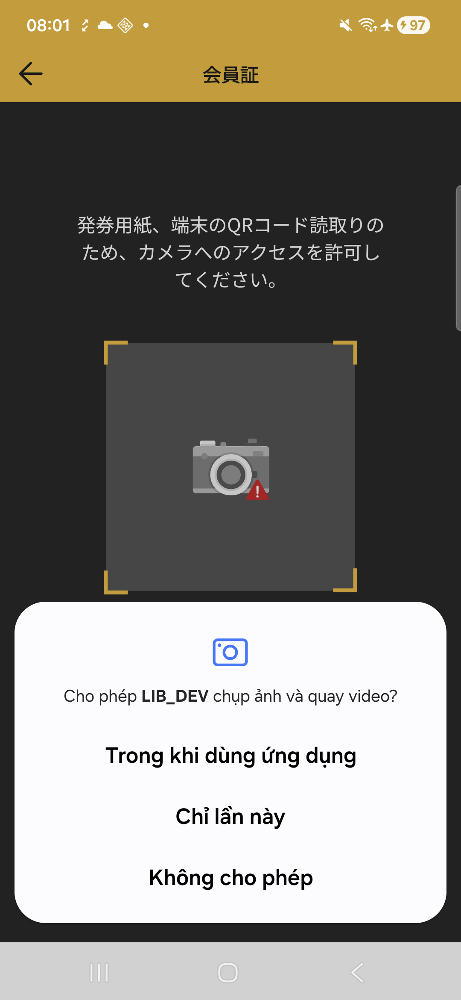
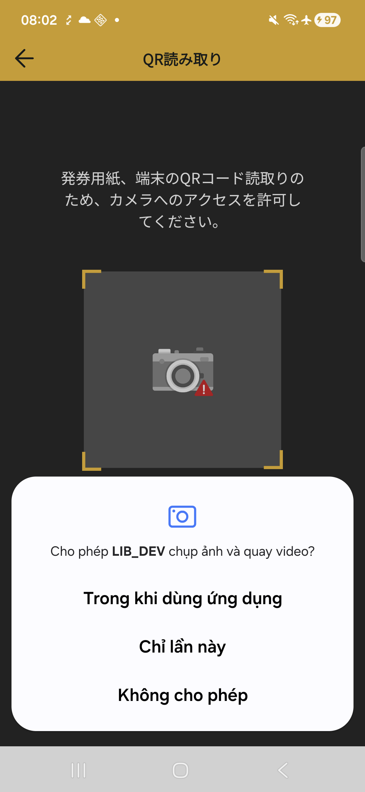
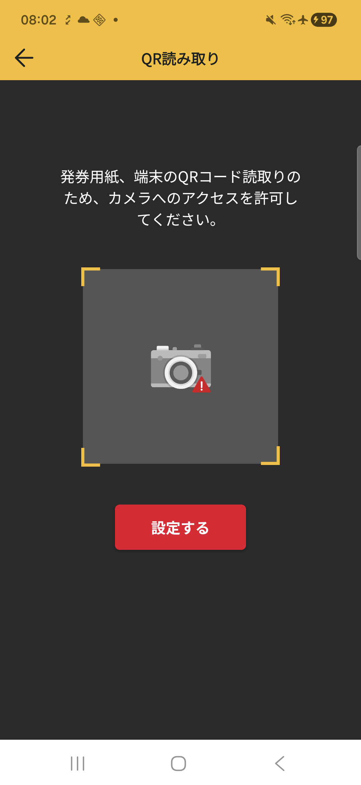
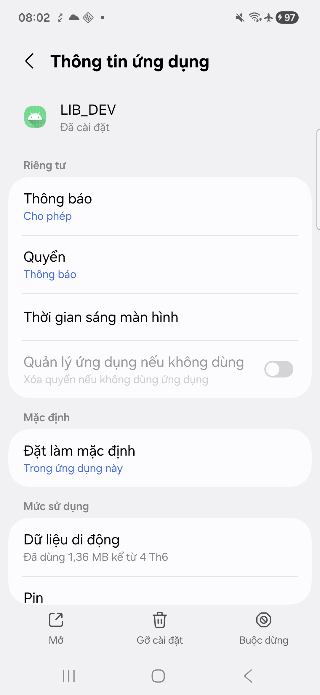

Luồng xử lý nghiệp vụ — Quét QR Code
Module: zscan | Phiên bản: v3 (bổ sung Dependency Map cross-module) | Cập nhật: 2026-07-02
👤 User State Matrix
Bảng này liệt kê mọi tổ hợp trạng thái user × tính năng để QA không bỏ sót case.
| Tính năng | Chưa đăng nhập | Đã đăng nhập | Ghi chú |
|---|---|---|---|
| Mở màn hình QR (cả 2 chế độ) | ✅ Hoạt động | ✅ Hoạt động | Không cần auth để mở camera |
| Quét QR tích điểm → kết quả | ⚠️ Popup đăng nhập | ✅ Gọi API | この機能はログイン後に使用できるようになります。 |
| Gọi API tích điểm | ❌ Không gọi | ✅ | Token chưa có — block ở client trước khi gọi |
| Quét QR số thứ tự → lấy số | ✅ Hoạt động | ✅ Hoạt động | API không cần auth |
| Xem / kiểm tra vé chờ đang có | ✅ | ✅ | State local, không cần auth |
Màn hình quét QR code dùng camera để nhận diện mã vạch 2D, hỗ trợ hai chế độ tùy theo cách người dùng vào màn hình:
| Chế độ | Người dùng vào từ đâu | Tiêu đề màn hình | Mục đích |
|---|---|---|---|
| Lấy số thứ tự | Màn hình chính (Home) | QR読み取り — Đọc QR | Quét QR phiếu chờ để lấy số thứ tự — hoặc quét QR hóa đơn để tích điểm (tự động nhận diện theo nội dung mã, không giới hạn chỉ 1 loại) |
| Tích điểm | Menu thành viên / tab Hạng | 会員証 — Thẻ thành viên | Quét QR trên hóa đơn để tích điểm / nâng hạng — chỉ xử lý tích điểm, không hỗ trợ lấy số thứ tự |
Màn hình khởi đầu
App khởi động — màn hình Home hiển thị trước khi người dùng vào chức năng quét.

🔗 Điểm vào & luồng xử lý kết quả
Màn hình quét QR có 2 cách để mở: từ Home, hoặc từ tab Hạng thành viên (Rank). Đây là cùng một màn hình quét, nhưng sau khi quét xong, nơi nhận và xử lý kết quả lại khác nhau tùy theo lúc đó người dùng mở từ đâu. Đây là điểm quan trọng khi test vì cùng một tình huống lỗi có thể dẫn tới trải nghiệm khác nhau.
hiện banner số đang chờ, chuyển sang
màn hình kết quả tích điểm, hoặc
màn hình sau đăng nhập / khảo sát"] Q -- Vào từ tab Hạng --> RR["Trả kết quả về tab Hạng:
chỉ cập nhật lại điểm/hạng,
KHÔNG hiện thông báo gì thêm"]
Cùng 1 màn hình quét QR, nhưng nơi nhận & xử lý kết quả khác nhau tùy điểm vào.
| Điểm vào | Cách người dùng thực hiện | Nơi xử lý kết quả sau khi quét xong |
|---|---|---|
| Từ Home | Bấm icon Quét QR ở màn hình chính | Màn hình chính (Home) — hiện banner số thứ tự đang chờ (nếu là lấy số), hoặc chuyển sang màn hình kết quả tích điểm |
| Từ thông báo đẩy / deep link | Bấm vào thông báo hoặc đường link được gửi đến máy | Giống hệt "Từ Home" ở trên |
| Từ tab Hạng thành viên (Rank) | Bấm vào thẻ thành viên trong tab Hạng | Tab Hạng thành viên — chỉ tự làm mới lại thông tin điểm/hạng, không hiện thông báo hay dialog nào khác, kể cả khi quét xong cần đăng nhập lại |
Sơ đồ luồng tổng thể
Sơ đồ trạng thái màn hình
🎫 Chế độ Tích điểm — Quét hóa đơn
Luồng thành công 📷 3 ảnh
Người dùng mở màn hình từ menu thành viên. Tiêu đề hiển thị: 会員証 (Thẻ thành viên). Hướng dẫn: レシートのQRコードを読み取ってください (Vui lòng quét mã QR trên hóa đơn).

Camera tự động khởi động, hiển thị khung ngắm QR ở trung tâm màn hình.

Người dùng đưa hóa đơn vào vùng khung ngắm. Camera liên tục phân tích hình ảnh.
Hệ thống nhận diện mã QR hợp lệ → phát tiếng beep + thiết bị rung ngay lập tức. Camera dừng phân tích để tránh quét nhiều lần.
Kiểm tra trạng thái đăng nhập. Nếu đã đăng nhập → hệ thống tự động gửi thông tin lên máy chủ để xử lý điểm.
Máy chủ xác nhận thành công và trả về thông tin điểm/hạng thành viên. Màn hình tự đóng và chuyển về màn hình kết quả.

Sơ đồ validate QR tích điểm
Bảng quy tắc trạng thái — Chế độ tích điểm


| Tình huống | Thông báo hiển thị | Hành động tiếp theo |
|---|---|---|
| QR hợp lệ, đã đăng nhập, API thành công | Thành công Không có popup — tự đóng | Chuyển sang màn hình kết quả điểm |
| Chưa đăng nhập | この機能はログイン後に使用できるようになります。 Tính năng này chỉ sử dụng được sau khi đăng nhập. Nút: 閉じる (Đóng) · ログイン (Đăng nhập) |
Đóng → camera tiếp tục. Đăng nhập → mở màn hình đăng nhập |
| QR không bắt đầu bằng "RJP", hoặc rỗng | 久兵衛屋で発行したQRコードを読取ってください。 Vui lòng quét mã QR do Kyubeeya phát hành. |
Camera restart sau 1 giây |
| QR bắt đầu bằng "RJP" nhưng dài hơn 71 ký tự | 久兵衛屋で発行されたレシートのみ有効です。 Chỉ có hóa đơn do Kyubeeya phát hành mới hợp lệ. |
Camera restart sau 1 giây |
| Không có kết nối mạng | 端末がインターネットに接続されていません。接続状況を確認してください。 Thiết bị không kết nối internet. Vui lòng kiểm tra kết nối. Nút: リトライ (Retry) · キャンセル (Hủy) |
Retry → gửi lại; Hủy → camera tiếp tục |
| Lỗi máy chủ 503 | サーバー側で一時的に不具合が発生しています。しばらく時間をおいてから再度お試しください。 Máy chủ đang gặp sự cố tạm thời. Vui lòng thử lại sau. |
Retry / Hủy |
| Lỗi máy chủ 500 / -108 | Thông báo lỗi cụ thể từ máy chủ (nếu có) | Retry / Hủy |
| API status 200 nhưng không có dữ liệu điểm | エラー (Lỗi) — thông báo mặc định | Retry / Hủy |
| Phiên đăng nhập hết hạn ngay giữa lúc quét (server trả lỗi 401) | エラー (Lỗi) — thông báo lỗi chung, vì trường hợp này hệ thống hiện chưa xử lý riêng. Nếu server có gửi kèm nội dung thông báo cụ thể thì sẽ hiện nội dung đó thay vì thông báo chung | OK → camera quét lại tiếp. Không tự mở màn hình đăng nhập (khác với trường hợp "chưa đăng nhập" ở trên) |
- Khi điện thoại ở chế độ im lặng: beep không phát nhưng rung vẫn hoạt động — cần test riêng 2 trường hợp.
- QR có chứa nhiều chuỗi "RJP" (ví dụ URL redirect): hệ thống tách chuỗi theo "amount=" để lấy phần sau — cần test QR có format đặc biệt này.
- Sau khi đăng nhập từ popup → màn hình quét đóng lại và trả về một loại kết quả đặc biệt (khác kết quả quét bình thường) — hành vi sau đó khác nhau tùy nơi mở màn hình quét: vào từ Home → tải lại Home, có thể hiện dialog đăng nhập thành công; vào từ tab Hạng thành viên → chỉ tự làm mới lại điểm/hạng, không có thông báo, không tự xử lý QR vừa quét (user phải quét lại).
- Retry sau lỗi mạng: chỉ gửi lại nếu QR bắt đầu bằng "RJP"; nếu không thì hiển thị lỗi "QR không hợp lệ".
- Khi quyền camera bị thu hồi trong lúc app chạy nền: màn hình tự đóng khi mở lại, không crash.
- Phiên đăng nhập hết hạn giữa chừng (401): khác với case "chưa đăng nhập" ban đầu — không có nút Login, chỉ popup lỗi chung rồi camera quét lại tiếp. Cần test riêng, đừng nhầm với case chưa đăng nhập (Lỗi 5).
- Mở màn hình quét khi đã logout từ tab Hạng thành viên (Rank): hệ thống không chặn ngay từ bước mở camera — màn hình quét vẫn mở bình thường dù đã logout. Việc từ chối chỉ xảy ra sau khi quét xong, khi gửi yêu cầu lên máy chủ (do chưa đăng nhập) → hiện Lỗi 5 (chưa đăng nhập).
🔢 Chế độ Lấy số thứ tự
Chế độ này chỉ hoạt động khi được mở từ màn hình chính (Home). Tính năng có thể bị tắt từ cấu hình máy chủ — nếu tắt thì mọi mã QR đều bị từ chối.
Luồng thành công 📷 2 ảnh
Người dùng mở màn hình từ Home. Tiêu đề: QR読み取り (Đọc QR). Hướng dẫn: 受付札、レシートのQRコードを読み取ってください (Vui lòng quét QR trên phiếu chờ hoặc hóa đơn).

Camera khởi động. Người dùng đưa phiếu chờ vào khung ngắm.
Hệ thống nhận diện QR → beep + rung. Camera dừng phân tích.
Kiểm tra loại QR: nếu URL chứa địa chỉ dịch vụ số thứ tự → tách chuỗi mã (sau "qr=" trong URL).
Validate chuỗi mã: kiểm tra độ dài, giải mã nếu cần, xác nhận mã cửa hàng khớp với danh sách cấu hình.
Kiểm tra người dùng có đang giữ vé chờ không. Nếu chưa có → đóng màn hình, trả chuỗi mã về màn hình gọi để xử lý đặt số.

Sơ đồ validate QR số thứ tự
Bảng quy tắc validate QR số thứ tự
Độ dài chuỗi (sau qr=) | Loại | Xử lý |
|---|---|---|
| < 21 ký tự | Quá ngắn | Lỗi — quét phiếu chờ Kyubeeya |
| 21–39 ký tự | Không xác định | Lỗi — giải mã thất bại |
| 40 ký tự | Cũ, không mã hóa | Extract brand code tại vị trí 14–21 |
| 41 ký tự | Cũ, không mã hóa | Extract brand code tại vị trí 15–22 |
> 41 ký tự, bắt đầu ZNV | Mới, đã mã hóa | Giải mã AES → validate lại 40/41 ký tự |
> 41 ký tự, không có ZNV | Không hợp lệ | Lỗi — giải mã thất bại |
Bảng quy tắc trạng thái — Lấy số thứ tự


| Tình huống | Thông báo hiển thị | Hành động tiếp theo |
|---|---|---|
| QR hợp lệ, chưa có vé chờ | Thành công Không popup — tự đóng | Màn hình gọi nhận chuỗi QR để đặt số |
| Tính năng bị tắt trong cấu hình | 本QRコードの読取りはサポートされていません。カメラアプリから読取ください。 Không hỗ trợ đọc mã QR này. Vui lòng dùng ứng dụng camera. |
Camera restart sau 1 giây |
| Chuỗi QR < 21 ký tự hoặc giải mã thất bại | 久兵衛屋で発行した受付札を読取ってください。 Vui lòng quét phiếu chờ do Kyubeeya phát hành. |
Camera restart sau 1 giây |
| Đang có vé chờ còn hiệu lực | "待ち組数"はアプリホーム画面でご確認いただけます。 Có thể xem số nhóm đang chờ trên màn hình chính. |
Camera restart sau 1 giây |
| Quét nhầm QR tích điểm (chứa "RJP") trong chế độ này | (Không có popup lỗi) | Tự động chuyển sang xử lý tích điểm |
| QR không liên quan, tính năng tắt | 本QRコードの読取りはサポートされていません。 Không hỗ trợ đọc mã QR này. |
Camera restart sau 1 giây |
- Hai định dạng QR: 40/41 ký tự (cũ, không mã hóa) và >41 ký tự bắt đầu "ZNV" (mới, AES). Phải test cả hai.
- Vé chờ "expired" vẫn bị coi là đã có vé → block đặt mới. Test case vé đã hết hạn.
- Trong chế độ lấy số thứ tự, quét nhầm QR tích điểm → hệ thống xử lý tích điểm luôn, không báo lỗi. Verify behavior cross-mode này.
- Danh sách mã cửa hàng từ cấu hình — nếu cấu hình rỗng → mọi mã cửa hàng bị từ chối. Test case cấu hình trống.
- QR rỗng khi tính năng lấy số thứ tự đang bị tắt (và đang mở từ Home): hệ thống ưu tiên hiển thị popup "Tính năng bị tắt" (Lỗi 4) thay vì popup lỗi QR chung — khác với chế độ Tích điểm, nơi QR rỗng luôn báo lỗi chung (Lỗi 1).
- Camera permission bị từ chối vĩnh viễn: hành vi giống hệt nhau dù mở từ đâu (bấm icon trên Home hay từ thông báo đẩy) — việc kiểm tra quyền camera không phụ thuộc vào nơi mở màn hình quét.
📷 Quyền truy cập Camera 📷 3 ảnh



| Trạng thái quyền | Giao diện hiển thị | Hành động người dùng | Kết quả |
|---|---|---|---|
| Lần đầu mở, chưa cấp quyền | Dialog hệ thống xin quyền camera. QRコードを読み取るためにカメラへのアクセスを許可してください。 (Cho phép camera để quét QR) |
Nhấn Cho phép | Camera khởi động, khung quét hiển thị |
| Đã từ chối một lần, hỏi lại được | Màn hình in-app "Cần quyền camera" với nút 設定する (Cài đặt) | Nhấn nút → dialog xin quyền lại | Cấp → camera hoạt động; Từ chối → ở lại màn hình chờ |
| Đã từ chối vĩnh viễn (Never ask again) | Màn hình in-app với nút 設定する | Nhấn nút → mở Cài đặt hệ thống | Tự cấp trong Cài đặt rồi quay lại app |
| Quyền bị thu hồi khi app chạy nền | (Không hiện giao diện lỗi) | Mở lại màn hình | Màn hình tự đóng ngay — không crash |
| Quay lại từ Cài đặt hệ thống | — | — | Màn hình tự kiểm tra lại quyền (onResume) |
- Test trên thiết bị thực, không dùng emulator — hành vi permission khác nhau giữa Android versions.
- Test thu hồi quyền từ Cài đặt trong khi app đang ở foreground: màn hình phải xử lý gracefully (tự đóng, không crash).
⚠️ Bảng thông báo lỗi đầy đủ
Tất cả thông báo người dùng thấy trong module này, kèm bản dịch và hành động sau popup.
| # | Tình huống kích hoạt | Thông báo (tiếng Nhật) | Nghĩa tiếng Việt | Nút bấm | Hành động |
|---|---|---|---|---|---|
| 1 | QR không hợp lệ (chung) | 久兵衛屋で発行したQRコードを読取ってください。 | Vui lòng quét mã QR do Kyubeeya phát hành. | OK | Camera restart |
| 2 | QR hóa đơn dài >71 ký tự | 久兵衛屋で発行されたレシートのみ有効です。 | Chỉ có hóa đơn do Kyubeeya phát hành mới hợp lệ. | OK | Camera restart |
| 3a | QR phiếu chờ quá ngắn (<21 ký tự) | 久兵衛屋で発行した受付札を読取ってください。 | Vui lòng quét phiếu chờ do Kyubeeya phát hành. | OK | Camera restart |
| 3b | Giải mã QR thất bại hoặc mã cửa hàng không khớp | 久兵衛屋で発行した受付札を読取ってください。 | Vui lòng quét phiếu chờ do Kyubeeya phát hành. | OK | Camera restart |
| 4 | Tính năng lấy số thứ tự bị tắt | 本QRコードの読取りはサポートされていません。カメラアプリから読取ください。 | Không hỗ trợ đọc mã QR này. Vui lòng dùng ứng dụng camera. | OK | Camera restart |
| 5 | Chưa đăng nhập khi quét tích điểm | この機能はログイン後に使用できるようになります。 | Tính năng này chỉ sử dụng được sau khi đăng nhập. | 閉じる / ログイン | Đóng → tiếp tục quét; Đăng nhập → mở màn hình đăng nhập |
| 6 | Đang có vé chờ | "待ち組数"はアプリホーム画面でご確認いただけます。 | Có thể xem số nhóm đang chờ trên màn hình chính. | OK | Camera restart |
| 7 | Không có mạng | 端末がインターネットに接続されていません。接続状況を確認してください。 | Thiết bị không kết nối internet. Vui lòng kiểm tra kết nối. | リトライ / キャンセル | Retry → gọi API lại; Hủy → camera tiếp tục |
| 8 | Lỗi server 500 hoặc -108 | Thông báo lỗi từ server (nếu có), hoặc thông báo mặc định | — | リトライ / キャンセル | Retry / Hủy |
| 9 | Lỗi server 503 (tạm thời) | サーバー側で一時的に不具合が発生しています。しばらく時間をおいてから再度お試しください。 | Máy chủ đang gặp sự cố tạm thời. Vui lòng thử lại sau. | リトライ / キャンセル | Retry / Hủy |
| 10 | Phiên đăng nhập hết hạn giữa chừng (server trả lỗi 401) | エラー (Lỗi) | Lỗi (thông báo chung) — hệ thống hiện chưa xử lý riêng cho trường hợp này nên hiện thông báo lỗi mặc định. Nếu server có gửi kèm nội dung thông báo cụ thể, sẽ hiện nội dung đó thay vì thông báo chung. | OK | Camera restart — không điều hướng sang login |